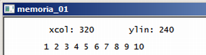
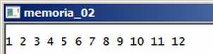

Curso completo de linguagem C++
Gameprog - Escola de programação de jogos digitais
Contato: gameprog.br@gmail.com
track09.html
09. Alocação de memória
9.1 A dupla new/delete

// memoria.cpp
// ilustra alocação de memória
#include <iostream>
using namespace std;
void inicio();
void fim();
// ponto de entrada de execução do programa
int main() {
inicio();
// reservamos memória para dois inteiros e definimos seus valores iniciais 320,240
int *xcol = new int (320);
int *ylin = new int (240);
// reservamos memória para uma lista de 10 inteiros
int *nlista = new int[10];
// definimos os valores iniciais de nossa lista de inteiros 1 - 10
for (int ncx=0; ncx < 10; ncx++) {
*(nlista + ncx) = ncx + 1;
} // endfor
cout << "\t xcol: " << *xcol;
cout << "\t ylin: " << *ylin << "\n\n";
cout << "\t";
// aqui mostramos o conteúdo de nossa lista de inteiros
for (int ncx=0; ncx < 10; ncx++)
cout << *(nlista + ncx) << " ";
cout << "\n";
delete xcol;
delete ylin;
delete[] nlista;
fim();
} // endmain
//************* funções ******************************************************
void inicio() {
system("color f0");
system("title memoria_01");
cout << "\n";
} // endfunction: initsys()
void fim() {
cout << "\n"; system("pause");
} // endfunction: endsys()
Na linguagem c++ vc pode usar a dupla de instruções new e delete respectivamente
para reservar e liberar memória do sistema. Quando vc declara variáveis no seu
programa o compilador pré-reserva a quantidade de memória necessária numa área
de memória denominada pilha (stack).
Em programas mais elaborados vc vai sentir a necessidade de reservar e liberar
memória de maneira dinâmica, de acordo com a necessidade que surgir na situação
tal como carregar arquivos ou criação de objetos que se tornarem necessários ou
ainda criar estrutura de dados que previamente você não sabe o tamanho exato delas.
A instrução new reserva memória da área de memória denominada heap e para cada
instrução new emitida deve haver uma instrução delete para liberar o espaço alocado
ao sistema.
int *xcol = new int (320);
Com esta sintaxe nós reservamos memória para um inteiro e inicializamos o
seu valor para 320. Veja que utilizamos ponteiros, e para acessar ou manipular
esse dado vc deve usar o operador de derreferência (*). Para fixar, reservamos
memória dessa forma: tipo_dado *myvar = new tipo_dado ( valor inicial);
A inicialização (valor inicial) é opcional.
delete xcol;
Esta linha libera ao sistema a memória alocada com a instrução new.
int *nlista = new int[10];
delete[] nlista;
O exemplo acima ilustra como você reserva e libera memória para uma array.
9.2 Retornando memória alocada em outra função

// memoria_02.cpp
// ilustra alocação de memória por outra função
#include <iostream>
using namespace std;
void inicio();
void fim();
int *getLista(int ntam);
// ponto de entrada de execução do programa
int main() {
inicio();
int *mylist = NULL;
int ntam = 12;
mylist = getLista( ntam );
for (int ncx=0; ncx < ntam; ncx++)
cout << *(mylist + ncx) << " ";
cout << "\n";
delete[] mylist;
fim();
} // endmain
//************* funções ******************************************************
void inicio() {
system("color f0");
system("title memoria_02");
cout << "\n";
} // endfunction: initsys()
void fim() {
cout << "\n"; system("pause");
} // endfunction: endsys()
//************* getLista() ***************************************************
int* getLista (int ntam) {
int* nlista = new int[ntam];
for (int ncx=0; ncx < ntam; ncx++) {
*(nlista + ncx) = ncx + 1;
} // endfor
return nlista;
} // endfunction: getLista()
O programa acima ilustra o retorno de memória alocada em uma outra função.
Como a cada new deve corresponder um delete, é necessário que a função que
recebeu o ponteiro delete-o quando não houver mais uso do mesmo.